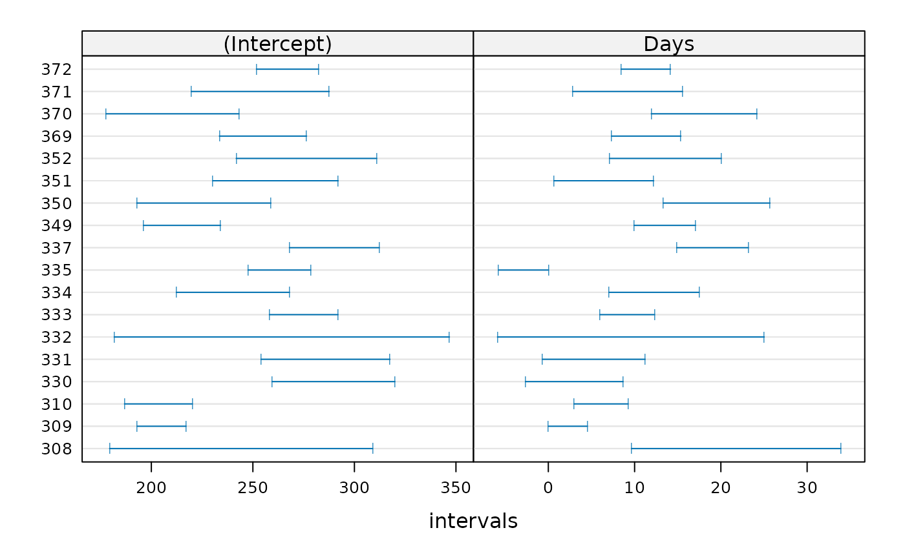

Fit List of lm or glm Objects with a Common Model
lmList.RdUsage
lmList(formula, data, family, subset, weights, na.action,
offset, pool = !isGLM || .hasScale(family2char(family)),
warn = TRUE, ...)Arguments
- formula
a linear
formulaobject of the formy ~ x1+...+xn | g. In the formula object,yrepresents the response,x1,...,xnthe covariates, andgthe grouping factor specifying the partitioning of the data according to which differentlmfits should be performed.- family
an optional
familyspecification for a generalized linear model (glm).- data
an optional data frame containing the variables named in
formula. By default the variables are taken from the environment from whichlmeris called. See Details.- subset
an optional expression indicating the subset of the rows of
datathat should be used in the fit. This can be a logical vector, or a numeric vector indicating which observation numbers are to be included, or a character vector of the row names to be included. All observations are included by default.- weights
an optional vector of ‘prior weights’ to be used in the fitting process. Should be
NULLor a numeric vector.- na.action
a function that indicates what should happen when the data contain
NAs. The default action (na.omit, inherited from the ‘factory fresh’ value ofgetOption("na.action")) strips any observations with any missing values in any variables.- offset
this can be used to specify an a priori known component to be included in the linear predictor during fitting. This should be
NULLor a numeric vector of length equal to the number of cases. One or moreoffsetterms can be included in the formula instead or as well, and if more than one is specified their sum is used. Seemodel.offset.- pool
logical scalar indicating if the variance estimate should pool the residual sums of squares. By default true if the model has a scale parameter (which includes all linear,
lmer(), ones).- warn
indicating if errors in the single fits should signal a “summary”
warning.- ...
additional, optional arguments to be passed to the model function or family evaluation.
Details
While
datais optional, the package authors strongly recommend its use, especially when later applying methods such asupdateanddrop1to the fitted model (such methods are not guaranteed to work properly ifdatais omitted). Ifdatais omitted, variables will be taken from the environment offormula(if specified as a formula) or from the parent frame (if specified as a character vector).Since lme4 version 1.1-16, if there are errors (see
stop) in the single (lm()orglm()) fits, they are summarized to a warning message which is returned as attribute"warnMessage"and signalled aswarning()when thewarnargument is true.In previous lme4 versions, a general (different) warning had been signalled in this case.
Examples
fm.plm <- lmList(Reaction ~ Days | Subject, sleepstudy)
coef(fm.plm)
#> (Intercept) Days
#> 308 244.1927 21.764702
#> 309 205.0549 2.261785
#> 310 203.4842 6.114899
#> 330 289.6851 3.008073
#> 331 285.7390 5.266019
#> 332 264.2516 9.566768
#> 333 275.0191 9.142045
#> 334 240.1629 12.253141
#> 335 263.0347 -2.881034
#> 337 290.1041 19.025974
#> 349 215.1118 13.493933
#> 350 225.8346 19.504017
#> 351 261.1470 6.433498
#> 352 276.3721 13.566549
#> 369 254.9681 11.348109
#> 370 210.4491 18.056151
#> 371 253.6360 9.188445
#> 372 267.0448 11.298073
fm.2 <- update(fm.plm, pool = FALSE)
## coefficients are the same, "pooled or unpooled":
stopifnot( all.equal(coef(fm.2), coef(fm.plm)) )
(ci <- confint(fm.plm)) # print and rather *see* :
#> An object of class "lmList4.confint"
#> , , (Intercept)
#>
#> 2.5 % 97.5 %
#> 308 179.4339 308.9515
#> 309 193.0264 217.0834
#> 310 186.7857 220.1827
#> 330 259.4656 319.9046
#> 331 253.9831 317.4948
#> 332 181.7151 346.7882
#> 333 258.1329 291.9053
#> 334 212.3016 268.0243
#> 335 247.5990 278.4704
#> 337 267.9833 312.2249
#> 349 196.1192 234.1043
#> 350 192.8172 258.8520
#> 351 230.3022 291.9919
#> 352 241.7849 310.9592
#> 369 233.5099 276.4264
#> 370 177.7602 243.1379
#> 371 219.6541 287.6179
#> 372 251.7509 282.3387
#>
#> , , Days
#>
#> 2.5 % 97.5 %
#> 308 9.634266613 33.895138
#> 309 0.008641467 4.514929
#> 310 2.986982693 9.242815
#> 330 -2.652558845 8.668704
#> 331 -0.682394612 11.214432
#> 332 -5.893742346 25.027278
#> 333 5.978973800 12.305117
#> 334 7.034230035 17.472052
#> 335 -5.772399880 0.010332
#> 337 14.882372150 23.169576
#> 349 9.936302154 17.051563
#> 350 13.319294525 25.688739
#> 351 0.655729402 12.211266
#> 352 7.087781175 20.045317
#> 369 7.328617389 15.367601
#> 370 11.932968572 24.179333
#> 371 2.823051508 15.553838
#> 372 8.433264432 14.162882
#>
plot(ci) # how widely they vary for the individuals
